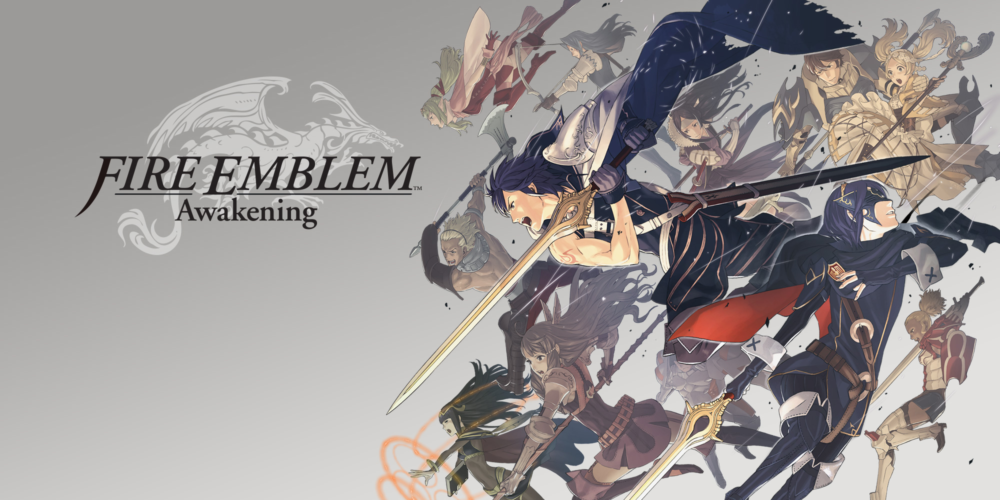
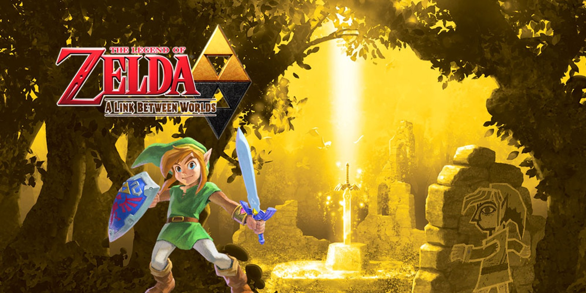

Nintendo
A Nintendo é uma empresa japonesa multinacional de entretenimento que começou por fabricar cartas de baralho e se tornou uma líder mundial em videogames e consoles, com um histórico de sucesso desde o lançamento do Nintendo Entertainment System nos anos 80. Atualmente, a empresa desenvolve a família de consoles Nintendo Switch e jogos icónicos como Mario, The Legend of Zelda e Pokémon, como objetivo de criar experiências únicas que tragam sorrisos para pessoas em todo o mundo.
Top 20 Jogos da Nintendo
- The Legend of Zelda: Ocarina of Time (N64)
- The Legend of Zelda: A Link to the Past (SNES)
- Super Metroid (SNES)
- Super Mario World (SNES)
- Super Mario 64 (N64)
- Metroid Prime (GCN)
- Super Mario Galaxy 2 (Wii)
- Chrono Trigger (SNES)
- Paper Mario: The Thousand-Year Door (GCN)
- Super Smash Bros. Melee (GCN)
- Mario Kart 8 (Wii U)
- Fire Emblem: Awakening (3DS)
- Pokémon HeartGold / SoulSilver (DS)
- The Legend of Zelda: A Link Between Worlds (3DS)
- Xenoblade Chronicles (Wii)
- Donkey Kong Country 2: Diddy’s Kong Quest (SNES)
- F-Zero GX (GCN)
- Animal Crossing: New Leaf (3DS)
- Super Mario Bros. 3 (NES)
- The Legend of Zelda: The Wind Waker (GCN)
A transição perfeita do 2D para o 3D: aventura épica, viagem no tempo e dungeons projetadas com precisão. Introduziu mira/Z-targeting e uma sensação de exploração em 3D que ainda influencia jogos hoje. Jogo-chave para qualquer fã de aventura.

Zelda 2D no seu ápice: mundo interligado, duas dimensões (mundo da luz e mundo das trevas) e puzzles brilhantes. Ritmo e design que definiram a fórmula “Zelda” para as gerações seguintes.
Atmosfera soturna, exploração não linear e progressão por upgrades — o arquétipo do “Metroidvania”. Cada power-up abre caminhos e o jogo conta sua história principalmente pelo level design e pela ambientação.
Plataforma quase perfeita: controles precisos, mapa com rotas alternativas e introdução do Yoshi. Um mix de acessibilidade e profundidade — ideal tanto pra novatos quanto pra caçadores de segredos.
Liberdade em 3D como você nunca tinha visto: cada fase é um mundo com objetivos múltiplos. Controles e câmera pioneiros que moldaram todos os jogos 3D depois dele.
Metroid em primeira pessoa com foco em exploração, inventário por upgrade e uma sensação de imersão rara. Mistura tiro e descoberta com um mundo interconectado e inteligente.
Plataforma criativa que reaplica física espacial e ideias malucas em cenários curtos e memoráveis — jogabilidade extremamente polida. Cada “planeta” é um puzzle/nível com identidade própria.
RPG praticamente impecável: combate dinâmico, múltiplos finais e enredo sobre viagens no tempo com personagens marcantes. Fluidez narrativa e mecânica que envelhecem como diamante.
RPG com personalidade: humor afiado, combate baseado em turnos com ação interativa e personagens carismáticos. Combina enredo, design de fases e mecânicas que tornam cada capítulo divertido.

Luta arcade com profundidade competitiva enorme. Rápido, técnico e ainda base de cena de e-sports; ótimo tanto pra jogar casualmente quanto pra competir sério.
Corrida arcade com física balanceada e pistas inventivas (anti-gravidade eleva o design). Muito acessível, mas com espaço para nível competitivo — excelente multiplayer local.
Tático por turnos que reviveu a série: personagens bem escritos, sistema de suporte e equilíbrio entre acessibilidade e profundidade estratégica. Entrada perfeita pra quem quer tática com história.
Remake polido com conteúdo gigantesco: Geração clássica refinada, Pokéwalker e muita área para explorar. Melhor equilíbrio entre nostalgia e adição de conteúdo.
Retorno direto à fórmula de ALTTP com uma mecânica nova (pintar-se na parede e atravessar ela). Mistura nostalgia e design moderno — ótimo para quem ama exploração densa sem ser punitivo.
JRPG de mundo aberto com escala épica: combate em tempo real tático, exploração massiva e narrativa com momentos memoráveis. Tem pacing de grande RPG — recompensa quem gosta de maratonas.

Plataforma 2D com ritmo e design de fases impecáveis; trilha sonora e direção de arte top. Considerado por muitos o ápice da trilogia DKC em termos de desafio e criatividade.
Corrida futurista extremamente técnica e rápida, com 60fps e pistas que desafiam reflexo e precisão. Não é para iniciantes, mas é visceralmente recompensador.
Simulador social relaxante: rotina diária, personalização e eventos sazonais que rendem meses de jogo. Ideal pra quem curte um passatempo calmo com loop de recompensas.
Design de fases exemplar: variedade, power-ups icônicos (tanooki), e um mapa que incentiva exploração. Um dos pilares do design de plataforma.
Direção de arte cel-shading atemporal e exploração marítima com atmosfera de aventura. Combina narrativa emotiva com mecânicas de navegação e dungeons criativas.